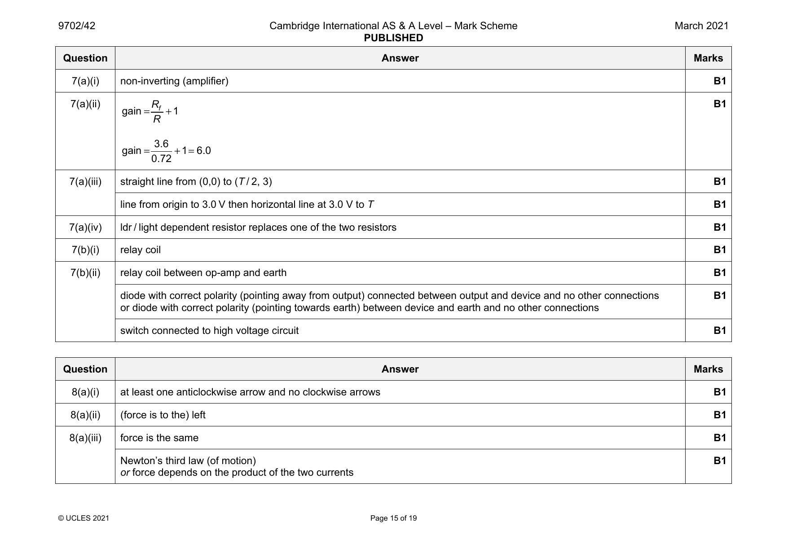
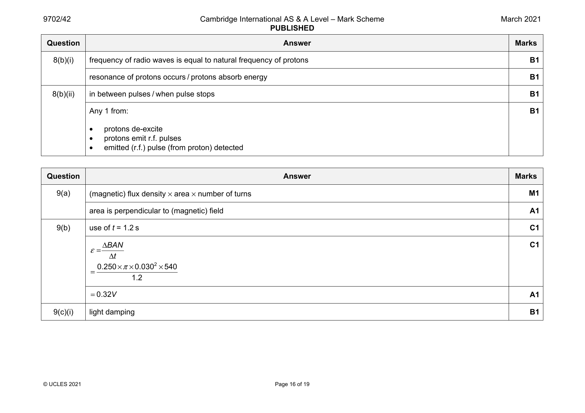
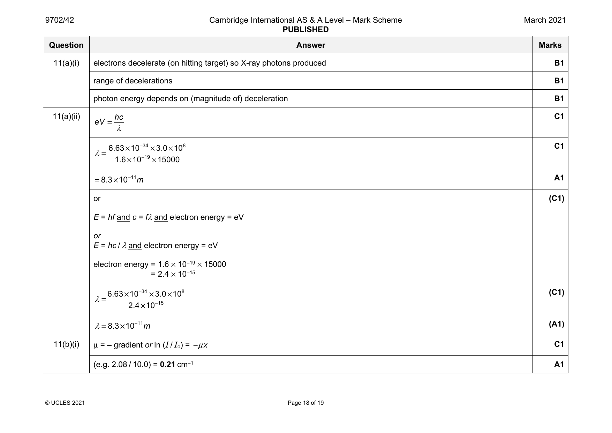
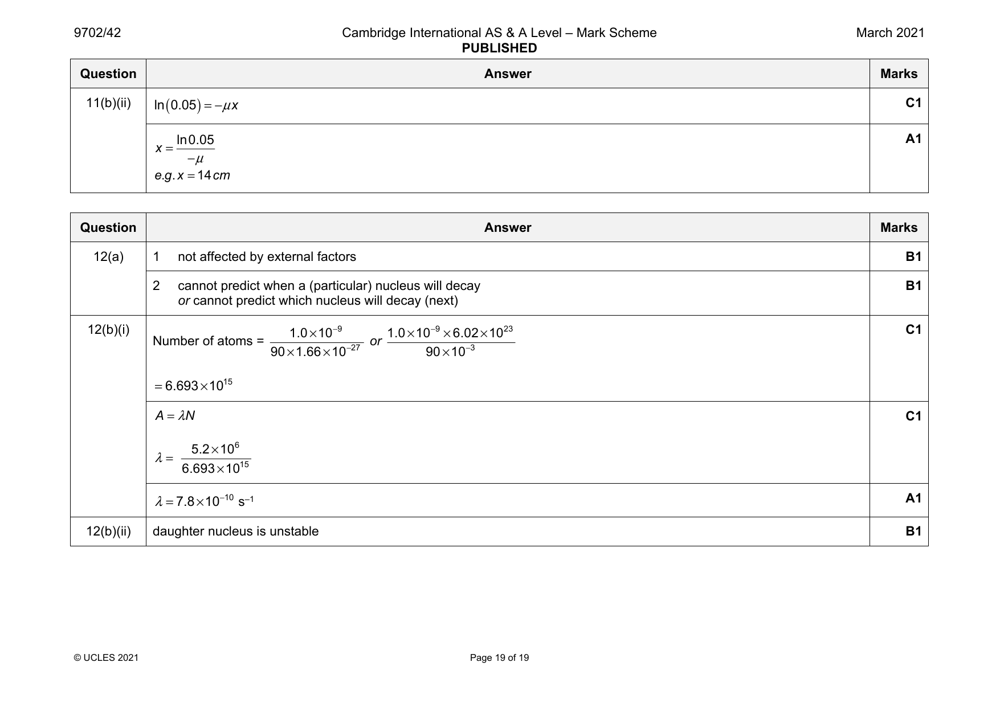
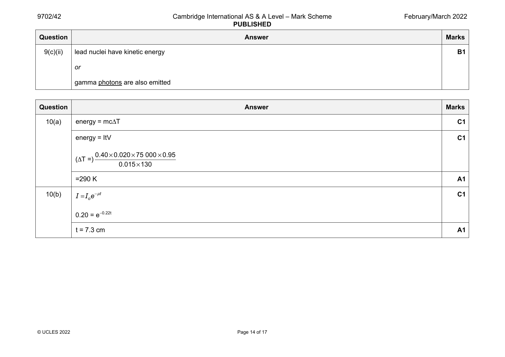
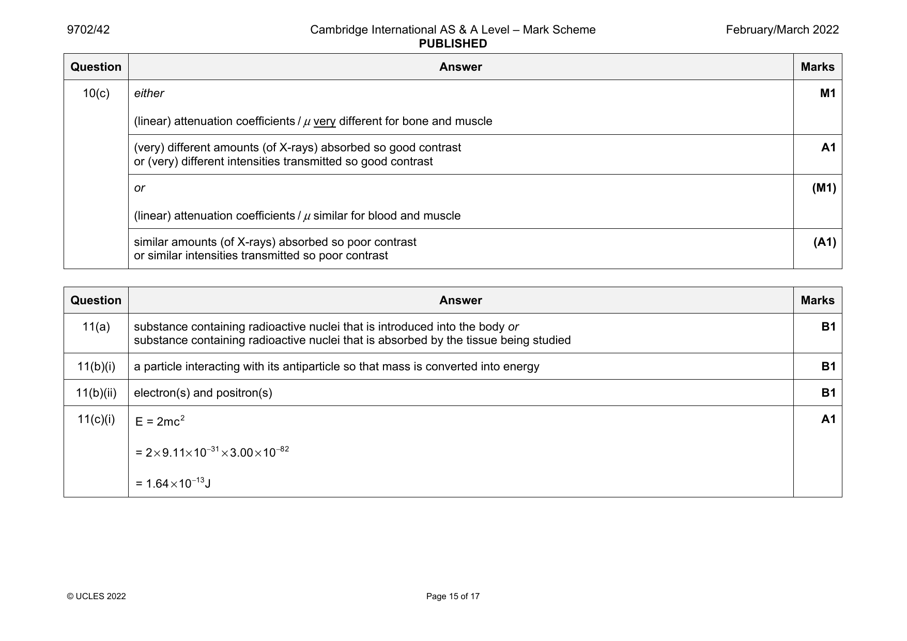
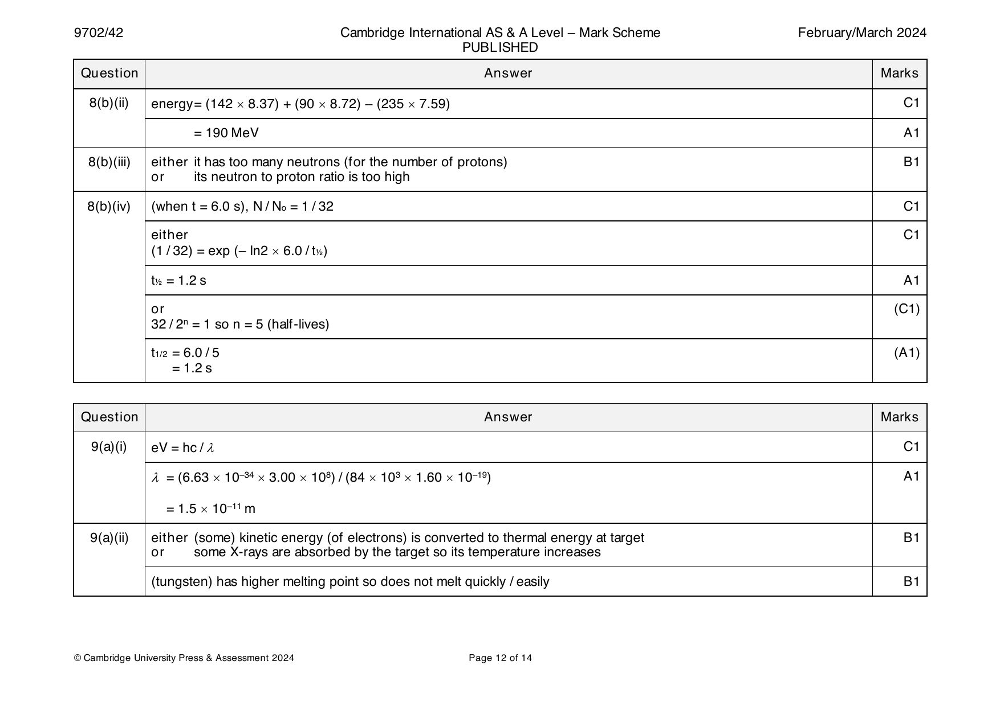
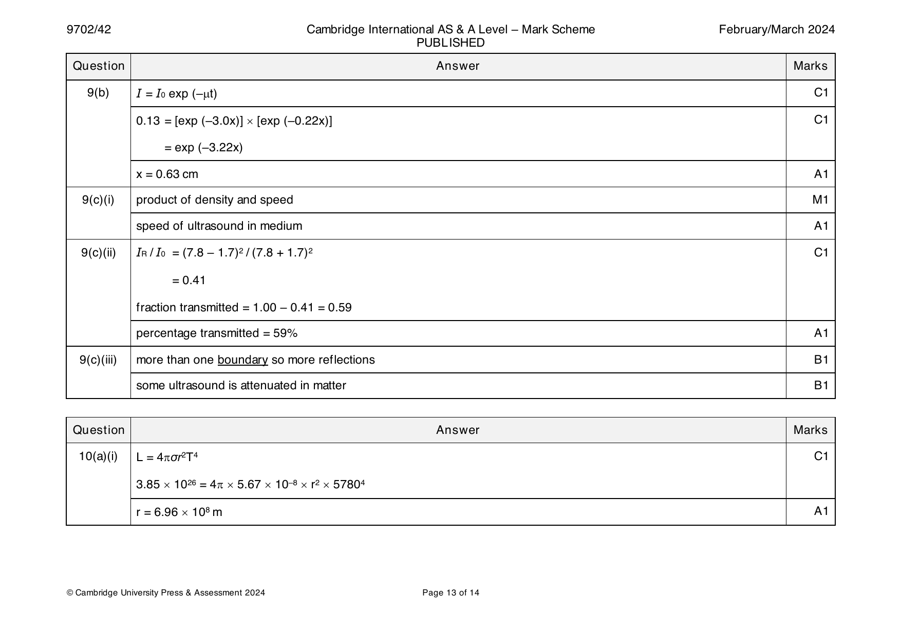

Try the new view →
9702-2021-m-42-q08
March 2021 · Paper 42 · Question 8 · 8 marks


8(a)(i) at least one anticlockwise arrow and no clockwise arrows B1
8(a)(ii) (force is to the) left B1
8(a)(iii) force is the same B1
Newton’s third law (of motion) B1
or force depends on the product of the two currents
© UCLES 2021 Page 15 of 19
8(b)(i) frequency of radio waves is equal to natural frequency of protons B1
resonance of protons occurs / protons absorb energy B1
8(b)(ii) in between pulses / when pulse stops B1
Any 1 from: B1
• protons de-excite
• protons emit r.f. pulses
• emitted (r.f.) pulse (from proton) detected
Question Answer Marks
Official mark scheme pages: 15, 16 · source PDF URL
9702-2021-m-42-q11
March 2021 · Paper 42 · Question 11 · 10 marks


11(a)(i) electrons decelerate (on hitting target) so X-ray photons produced B1
range of decelerations B1
photon energy depends on (magnitude of) deceleration B1
11(a)(ii) hc C1
eV =
λ
6.63×10 −34 ×3.0×108 C1
λ=
1.6×10 −19 ×15000
=8.3×10 −11m A1
or (C1)
E = hf and c = fλ and electron energy = eV
or
E = hc / λ and electron energy = eV
electron energy = 1.6 × 10–19 × 15000
= 2.4 × 10–15
6.63×10 −34 ×3.0×108 (C1)
λ=
2.4×10 −15
λ=8.3×10 −11m (A1)
11(b)(i) μ = – gradient or ln (I / I ) = −μx C1
o
(e.g. 2.08 / 10.0) = 0.21 cm–1 A1
© UCLES 2021 Page 18 of 19
11(b)(ii) ln 0.05 =−μx C1
ln0.05 A1
x =
−μ
e.g. x =14 cm
Question Answer Marks
Official mark scheme pages: 18, 19 · source PDF URL
9702-2021-mj-41-q04
May/June 2021 · Paper 41 · Question 4 · 5 marks
4 (ultrasound) pulse B1
reflected at boundaries B1
gel is used to minimise reflection at skin B1
or
generated and detected by quartz crystal
time delay between generation and detection gives information about depth B1
intensity (of reflected wave) gives information about nature of boundary B1
© UCLES 2021 Page 10 of 18
Official mark scheme pages: 10 · source PDF URL
9702-2021-mj-41-q11
May/June 2021 · Paper 41 · Question 11 · 7 marks
11(a) intensity: vary filament current/p.d. across filament B1
hardness: vary accelerating potential difference B1
11(b)(i) I = I e –μx C1
0
I = I exp(–0.92 × 9.0) A1
S 0
= 2.5 × 10–4 I
0
11(b)(ii) I = [exp(–0.92 × 6.0) × exp(–2.9 × 3.0)] I C1
C 0
= 6.7 × 10–7 I A1
0
11(c) conclusion consistent with values in (b)(i) and (b)(ii) B1
e.g. I ≫ I so good contrast
S C
© UCLES 2021 Page 17 of 18
Official mark scheme pages: 17 · source PDF URL
9702-2021-mj-42-q11
May/June 2021 · Paper 42 · Question 11 · 6 marks
11(a) to produce a 3-dimensional image of structure/body B1
11(b) X-rays (are used) B1
scanning in sections B1
scanning from many angles B1
image of each section is 2-dimensional B1
scanning repeated for many sections B1
or
images of many sections combined together
Question Answer Marks
Official mark scheme pages: 18 · source PDF URL
9702-2021-mj-43-q04
May/June 2021 · Paper 43 · Question 4 · 5 marks
4 (ultrasound) pulse B1
reflected at boundaries B1
gel is used to minimise reflection at skin B1
or
generated and detected by quartz crystal
time delay between generation and detection gives information about depth B1
intensity (of reflected wave) gives information about nature of boundary B1
© UCLES 2021 Page 10 of 18
Official mark scheme pages: 10 · source PDF URL
9702-2021-mj-43-q11
May/June 2021 · Paper 43 · Question 11 · 7 marks
11(a) intensity: vary filament current/p.d. across filament B1
hardness: vary accelerating potential difference B1
11(b)(i) I = I e –μx C1
0
I = I exp(–0.92 × 9.0) A1
S 0
= 2.5 × 10–4 I
0
11(b)(ii) I = [exp(–0.92 × 6.0) × exp(–2.9 × 3.0)] I C1
C 0
= 6.7 × 10–7 I A1
0
11(c) conclusion consistent with values in (b)(i) and (b)(ii) B1
e.g. I ≫ I so good contrast
S C
© UCLES 2021 Page 17 of 18
Official mark scheme pages: 17 · source PDF URL
9702-2021-on-41-q11
Oct/Nov 2021 · Paper 41 · Question 11 · 7 marks
11(a)(i) ease with which edges can be distinguished B1
11(a)(ii) difference in degrees of blackening B1
11(b) I = I exp (–μx) C1
0
0.12 = exp (–μ × 2.3) C1
ln 0.12 = –2.3 × μ
μ = 0.92 cm–1 A1
11(c) advantage: produces 3-dimensional image B1
disadvantage: (much) greater exposure to radiation B1
Question Answer Marks
Official mark scheme pages: 15 · source PDF URL
9702-2021-on-42-q11
Oct/Nov 2021 · Paper 42 · Question 11 · 7 marks
11(a) generates ultrasound B1
detects reflected ultrasound B1
applied p.d. causes crystal to vibrate B1
or
vibrations cause crystal to generate an e.m.f.
11(b)(i) product of density and speed M1
speed of ultrasound in medium A1
11(b)(ii) difference between (the specific acoustic impedances) C1
• if similar/same then reflection coefficient is zero/very low A1
• if very different then reflection coefficient is (nearly) 1
• the lower the difference means lower the reflection coefficient
(any one point)
© UCLES 2021 Page 17 of 19
Official mark scheme pages: 17 · source PDF URL
9702-2021-on-43-q11
Oct/Nov 2021 · Paper 43 · Question 11 · 7 marks
11(a)(i) ease with which edges can be distinguished B1
11(a)(ii) difference in degrees of blackening B1
11(b) I = I exp (–μx) C1
0
0.12 = exp (–μ × 2.3) C1
ln 0.12 = –2.3 × μ
μ = 0.92 cm–1 A1
11(c) advantage: produces 3-dimensional image B1
disadvantage: (much) greater exposure to radiation B1
Question Answer Marks
Official mark scheme pages: 15 · source PDF URL
9702-2022-m-42-q10
March 2022 · Paper 42 · Question 10 · 7 marks


10(a) energy = mcΔT C1
energy = ItV C1
0.40×0.020×75 000 ×0.95
(ΔT =)
0.015×130
=290 K A1
10(b) I = I e −μt C1
o
0.20 = e
−0.22t
t = 7.3 cm A1
© UCLES 2022 Page 14 of 17
10(c) either M1
(linear) attenuation coefficients / μ very different for bone and muscle
(very) different amounts (of X-rays) absorbed so good contrast A1
or (very) different intensities transmitted so good contrast
or (M1)
(linear) attenuation coefficients / μ similar for blood and muscle
similar amounts (of X-rays) absorbed so poor contrast (A1)
or similar intensities transmitted so poor contrast
Question Answer Marks
Official mark scheme pages: 14, 15 · source PDF URL
9702-2022-m-42-q11
March 2022 · Paper 42 · Question 11 · 9 marks
11(a) substance containing radioactive nuclei that is introduced into the body or B1
substance containing radioactive nuclei that is absorbed by the tissue being studied
11(b)(i) a particle interacting with its antiparticle so that mass is converted into energy B1
11(b)(ii) electron(s) and positron(s) B1
11(c)(i) E = 2mc2 A1
= 2×9.11×10 −31×3.00×10 −82
= 1.64×10 −13J
© UCLES 2022 Page 15 of 17
11(c)(ii) 2hc C1
λ =
E
2×6.63×10 −34 ×3.00×108
=
1.64×10 −13
= 2.43 × 10 −12 m A1
11(d) Any 3 from: B3
• the two gamma photons travel in opposite directions
• gamma photons detected (outside body / by detectors)
• gamma photons arrive (at detector) at different times
• determine location of production (of gamma)
• image of tracer concentration in tissue produced
Question Answer Marks
Official mark scheme pages: 15, 16 · source PDF URL
9702-2022-mj-41-q09
May/June 2022 · Paper 41 · Question 9 · 9 marks
9(a)(i) electrons are accelerated (by an applied p.d.) B1
electrons hit target B1
X-rays produced when electrons decelerate B1
9(a)(ii) images of the multiple sections are combined to create a 3-D image B1
9(b)(i) I = I exp (– μx) C1
0
= I exp (– 0.89 5.6) A1
0
= 0.0068 I
0
9(b)(ii) I = I exp (– 2.4 3.4) exp (– 0.89 3.2) C1
0
= 1.7 10–5 I A1
0
9(c) comparison of intensities or values in (b) leading to conclusion consistent with these values B1
© UCLES 2022 Page 15 of 16
Official mark scheme pages: 15 · source PDF URL
9702-2022-mj-43-q09
May/June 2022 · Paper 43 · Question 9 · 9 marks
9(a)(i) electrons are accelerated (by an applied p.d.) B1
electrons hit target B1
X-rays produced when electrons decelerate B1
9(a)(ii) images of the multiple sections are combined to create a 3-D image B1
9(b)(i) I = I exp (– μx) C1
0
= I exp (– 0.89 5.6) A1
0
= 0.0068 I
0
9(b)(ii) I = I exp (– 2.4 3.4) exp (– 0.89 3.2) C1
0
= 1.7 10–5 I A1
0
9(c) comparison of intensities or values in (b) leading to conclusion consistent with these values B1
© UCLES 2022 Page 15 of 16
Official mark scheme pages: 15 · source PDF URL
9702-2022-on-42-q10
Oct/Nov 2022 · Paper 42 · Question 10 · 9 marks
10(a)(i) introduction of tracer (into the body) M1
containing a + emitter A1
10(a)(ii) positron interacts with electron B1
(pair) annihilation occurs B1
mass of particles converted into gamma photons B1
10(b) (annihilation of electron and positron) produces two photons B1
E = ()mc2 B1
E = hf and f = c / B1
or
E = hc /
= {[2] 6.63 10–34 3.00 108} / {[2] 9.11 10–31 (3.00 108)2} B1
= 2.4(3) 10–12 m or 2.4(3) pm (full substitution and answer with unit needed)
© UCLES 2022 Page 16 of 16
Official mark scheme pages: 16 · source PDF URL
9702-2023-m-42-q09
March 2023 · Paper 42 · Question 9 · 9 marks
9(a) piezo-electric crystal B1
(ultrasound) wave causes shape change / vibrations (of crystal) B1
shape change / vibrations causes e.m.f. (which is detected) B1
9(b)(i) 93V A1
9(b)(ii) 2.7 107rads–1 A1
9(c)(i) kgm–2s–1 B1
9(c)(ii) = Z / c = 1.7 106 / 1600 A1
= 1100 kg m–3
9(c)(iii) intensity reflection coefficient ≈ 1 or Z and Z are very different B1
1 2
almost no / no ultrasound transmitted (into air filled cavity) B1
© UCLES 2023 Page 17 of 18
Official mark scheme pages: 17 · source PDF URL
9702-2023-mj-41-q08
May/June 2023 · Paper 41 · Question 8 · 8 marks
8(a)(i) specific acoustic impedance = 1200 1400 = 1.68 106 kg m–2 s–1 A1
8(a)(ii) density of air shown in table as 1.29 A1
speed of sound in tissue shown in table as 1540 A1
8(b)(i) intensity reflection coefficient = (Z – Z )2 / (Z + Z )2 C1
1 2 1 2
= (1680000 – 440)2 / (1680000 + 440)2
= 0.999 A1
8(b)(ii) intensity reflection coefficient = (Z – Z )2 / (Z + Z )2 A1
1 2 1 2
= (1680000 – 1680000)2 / (1680000 + 1680000)2
= 0
8(c) without gel, (almost) all of the (incident) ultrasound is reflected (from skin) B1
with gel, (almost) all of the (incident) ultrasound is transmitted (into the body) B1
© UCLES 2023 Page 14 of 16
Official mark scheme pages: 14 · source PDF URL
9702-2023-mj-42-q10
May/June 2023 · Paper 42 · Question 10 · 9 marks
10(a)(i) electrons B1
10(a)(ii) electrons are decelerated / stopped on impact with the target B1
(kinetic) energy lost by electrons emitted as (X-ray) photons B1
10(a)(iii) eV = hc / C1
= (6.63 10–34 3.00 108) / (1.60 10–19 5800) C1
= 2.14 10–10 m A1
10(b) I = I exp (–x) C1
0
I / I = exp (–(1.4 2.8)) C1
T 0
= 0.020
% absorbed = (1.000 – 0.0198) 100 A1
= 98%
© UCLES 2023 Page 15 of 15
Official mark scheme pages: 15 · source PDF URL
9702-2023-mj-43-q08
May/June 2023 · Paper 43 · Question 8 · 8 marks
8(a)(i) specific acoustic impedance = 1200 1400 = 1.68 106 kg m–2 s–1 A1
8(a)(ii) density of air shown in table as 1.29 A1
speed of sound in tissue shown in table as 1540 A1
8(b)(i) intensity reflection coefficient = (Z – Z )2 / (Z + Z )2 C1
1 2 1 2
= (1680000 – 440)2 / (1680000 + 440)2
= 0.999 A1
8(b)(ii) intensity reflection coefficient = (Z – Z )2 / (Z + Z )2 A1
1 2 1 2
= (1680000 – 1680000)2 / (1680000 + 1680000)2
= 0
8(c) without gel, (almost) all of the (incident) ultrasound is reflected (from skin) B1
with gel, (almost) all of the (incident) ultrasound is transmitted (into the body) B1
© UCLES 2023 Page 14 of 16
Official mark scheme pages: 14 · source PDF URL
9702-2023-on-41-q10
Oct/Nov 2023 · Paper 41 · Question 10 · 8 marks
10(a) ultrasound production: vibrating quartz crystal B1
X-ray production: electrons hitting metal target B1
ultrasound detected wave: reflected B1
X-ray detected wave: transmitted B1
10(b)(i) I = I exp (–x) C1
0
ln (0.72) = –6.2 A1
= 0.053 cm–1
10(b)(ii) I / I = exp (–9.3 0.053) C1
0
( = 0.61)
percentage attenuated = 100 (1.00 – 0.61) A1
= 39%
© UCLES 2023 Page 16 of 16
Official mark scheme pages: 16 · source PDF URL
9702-2023-on-42-q09
Oct/Nov 2023 · Paper 42 · Question 9 · 12 marks
9(a)(i) material introduced into the body B1
and
(position in body) can be detected or absorbed by the tissue (being studied)
9(a)(ii) X = + or e+ and P = 1 B1
Q = 0 and R = 18 B1
9(b)(i) positrons (emitted in the decay) and electrons annihilate B1
mass of particles becomes energy of gamma photons B1
9(b)(ii) arrival times of photons are processed B1
image built up of tracer concentration in the tissue B1
9(c)(i) A = N and = ln 2 / T C1
N = n N C1
A
2 photons produced from each decay, so R = 2 n N A1
0 A
R = (2 ln 2) nN / T (allow 0.693 for ln 2)
0 A
9(c)(ii) sketch: exponential decay curve from t = 0 to t = 2T, starting at (0, R ) and with a negative gradient of continuously B1
0
decreasing magnitude
line with negative gradient passing through (T, R / 2) and (2T, R / 4) B1
0 0
© UCLES 2023 Page 14 of 15
Official mark scheme pages: 14 · source PDF URL
9702-2023-on-43-q10
Oct/Nov 2023 · Paper 43 · Question 10 · 8 marks
10(a) ultrasound production: vibrating quartz crystal B1
X-ray production: electrons hitting metal target B1
ultrasound detected wave: reflected B1
X-ray detected wave: transmitted B1
10(b)(i) I = I exp (–x) C1
0
ln (0.72) = –6.2 A1
= 0.053 cm–1
10(b)(ii) I / I = exp (–9.3 0.053) C1
0
( = 0.61)
percentage attenuated = 100 (1.00 – 0.61) A1
= 39%
© UCLES 2023 Page 16 of 16
Official mark scheme pages: 16 · source PDF URL
9702-2024-m-42-q09
March 2024 · Paper 42 · Question 9 · 13 marks


9(a)(i) eV = hc / C1
= (6.63 10–34 3.00 108) / (84 103 1.60 10–19) A1
= 1.5 10–11 m
9(a)(ii) either (some) kinetic energy (of electrons) is converted to thermal energy at target B1
or some X-rays are absorbed by the target so its temperature increases
(tungsten) has higher melting point so does not melt quickly / easily B1
© Cambridge University Press & Assessment 2024 Page 12 of 14
9(b) I = I exp (–t) C1
0
0.13 = [exp (–3.0x)] [exp (–0.22x)] C1
= exp (–3.22x)
x = 0.63 cm A1
9(c)(i) product of density and speed M1
speed of ultrasound in medium A1
9(c)(ii) I / I = (7.8 – 1.7)2 / (7.8 + 1.7)2 C1
R 0
= 0.41
fraction transmitted = 1.00 – 0.41 = 0.59
percentage transmitted = 59% A1
9(c)(iii) more than one boundary so more reflections B1
some ultrasound is attenuated in matter B1
Question Answer Marks
Official mark scheme pages: 12, 13 · source PDF URL
9702-2024-mj-41-q08
May/June 2024 · Paper 41 · Question 8 · 13 marks
8(a) packet / quantum of energy M1
of electromagnetic radiation A1
8(b)(i) electron(s) B1
8(b)(ii) X labelled – and Y labelled + B1
8(c)(i) 0.032 MeV A1
8(c)(ii) momentum = E / c C1
momentum = (0.032 × 1.60 10–13) / (3.00 108) A1
= 1.7 10–23 N s
8(c)(iii) E = hf and = c / f C1
= hc / E C1
= (6.63 10–34 × 3.00 108) / (0.032 1.60 × 10–13)
= 3.9 10–11 m A1
8(d) discussion of bone and soft tissue B1
discussion of different attenuation (coefficients) B1
or
discussion differences in penetration / transmission / absorption
transmitted intensities (by bone and tissue) are very different (leading to good contrast images) B1
© Cambridge University Press & Assessment 2024 Page 13 of 15
Official mark scheme pages: 13 · source PDF URL
9702-2024-mj-42-q10
May/June 2024 · Paper 42 · Question 10 · 7 marks
10(a) time gives information about depth (of boundary) B1
intensity gives information about nature of boundary B1
10(b)(i) product of density and speed M1
speed of ultrasound in medium (and density of medium) A1
10(b)(ii) Z = 1000 1420 (= 1.42 106 kg m–2 s–1) C1
water
and
Z = 2500 4560 (= 11.4 106 kg m–2 s–1)
glass
intensity reflection coefficient = (11.4 – 1.42)2 / (11.4 + 1.42)2 C1
= 0.61 A1
© Cambridge University Press & Assessment 2024 Page 16 of 16
Official mark scheme pages: 16 · source PDF URL
9702-2024-mj-43-q08
May/June 2024 · Paper 43 · Question 8 · 13 marks
8(a) packet / quantum of energy M1
of electromagnetic radiation A1
8(b)(i) electron(s) B1
8(b)(ii) X labelled – and Y labelled + B1
8(c)(i) 0.032 MeV A1
8(c)(ii) momentum = E / c C1
momentum = (0.032 × 1.60 10–13) / (3.00 108) A1
= 1.7 10–23 N s
8(c)(iii) E = hf and = c / f C1
= hc / E C1
= (6.63 10–34 × 3.00 108) / (0.032 1.60 × 10–13)
= 3.9 10–11 m A1
8(d) discussion of bone and soft tissue B1
discussion of different attenuation (coefficients) B1
or
discussion differences in penetration / transmission / absorption
transmitted intensities (by bone and tissue) are very different (leading to good contrast images) B1
© Cambridge University Press & Assessment 2024 Page 13 of 15
Official mark scheme pages: 13 · source PDF URL
9702-2024-on-41-q09
Oct/Nov 2024 · Paper 41 · Question 9 · 10 marks
9(a)(i) positron B1
9(a)(ii) = ln 2 / (110 60) = 1.05 10–4 s–1 A1
9(a)(iii) N = M / (18 u) or (M in grams N / 18) C1
A
N = (2.1 10–12) / (18 1.66 10–27) or (2.1 10–9 6.02 1023) / 18
( = 7.0 1013)
A = N C1
= 1.05 10–4 7.0 1013 A1
= 7.4 109 Bq
9(b)(i) • (pair) annihilation occurs B3
• the mass of the two particles is converted into energy
• two gamma photons are formed and travel in opposite directions
or
two gamma photons are formed and leave the body
• difference in arrival times of photons (at detector) is processed
Any three points, 1 mark each
9(b)(ii) with a shorter half-life: sample would (almost) fully decay before the test is complete B1
a longer half-life: exposes patient to harmful/ionising radiation unnecessarily B1
or
with a longer half-life: a larger dose (of tracer) needed to produce detectable activity
© Cambridge University Press & Assessment 2024 Page 14 of 15
Official mark scheme pages: 14 · source PDF URL
9702-2024-on-43-q09
Oct/Nov 2024 · Paper 43 · Question 9 · 10 marks
9(a)(i) positron B1
9(a)(ii) = ln 2 / (110 60) = 1.05 10–4 s–1 A1
9(a)(iii) N = M / (18 u) or (M in grams N / 18) C1
A
N = (2.1 10–12) / (18 1.66 10–27) or (2.1 10–9 6.02 1023) / 18
( = 7.0 1013)
A = N C1
= 1.05 10–4 7.0 1013 A1
= 7.4 109 Bq
9(b)(i) • (pair) annihilation occurs B3
• the mass of the two particles is converted into energy
• two gamma photons are formed and travel in opposite directions
or
two gamma photons are formed and leave the body
• difference in arrival times of photons (at detector) is processed
Any three points, 1 mark each
9(b)(ii) with a shorter half-life: sample would (almost) fully decay before the test is complete B1
a longer half-life: exposes patient to harmful/ionising radiation unnecessarily B1
or
with a longer half-life: a larger dose (of tracer) needed to produce detectable activity
© Cambridge University Press & Assessment 2024 Page 14 of 15
Official mark scheme pages: 14 · source PDF URL
9702-2025-on-41-q10
Oct/Nov 2025 · Paper 41 · Question 10 · 8 marks
10(a) product of density and speed M1
speed of sound in medium (and density of the medium) A1
10(b) ultrasound waves cause crystal to vibrate B1
vibrations (of crystal) cause induced e.m.f. (across crystal) B1
10(c)(i) intensity reflection coefficient= (40.4 – 1.48)2 / (40.4 + 1.48)2 C1
= 0.86 A1
10(c)(ii) Z values are very similar B1
(almost) all the ultrasound will be transmitted B1
or
(almost) none of the ultrasound will be reflected
© Cambridge University Press & Assessment 2025 Page 17 of 17
Official mark scheme pages: 17 · source PDF URL
9702-2025-on-42-q10
Oct/Nov 2025 · Paper 42 · Question 10 · 9 marks
10(a) difference in degrees of blackening B1
10(b)(i) I = I exp (–x) A1
0
= I exp (– 5.8 0.35) = 0.13 I
0 0
10(b)(ii) use of exp {–(0.35 3.7)} factor C1
0.053I = I exp {–[(0.35 3.7) + 2.1]} C1
0 0
= 0.78 cm–1 A1
10(b)(iii) factor of only 2.5 between the (detected) intensities (so not good contrast) B1
10(c) (structure) scanned in (thin) sections B1
(many) scans (of each section) taken from different angles B1
scanning repeated for all sections and (data) compiled (to form 3D image) B1
© Cambridge University Press & Assessment 2025 Page 17 of 17
Official mark scheme pages: 17 · source PDF URL
9702-2025-on-43-q10
Oct/Nov 2025 · Paper 43 · Question 10 · 8 marks
10(a) product of density and speed M1
speed of sound in medium (and density of the medium) A1
10(b) ultrasound waves cause crystal to vibrate B1
vibrations (of crystal) cause induced e.m.f. (across crystal) B1
10(c)(i) intensity reflection coefficient= (40.4 – 1.48)2 / (40.4 + 1.48)2 C1
= 0.86 A1
10(c)(ii) Z values are very similar B1
(almost) all the ultrasound will be transmitted B1
or
(almost) none of the ultrasound will be reflected
© Cambridge University Press & Assessment 2025 Page 17 of 17
Official mark scheme pages: 17 · source PDF URL